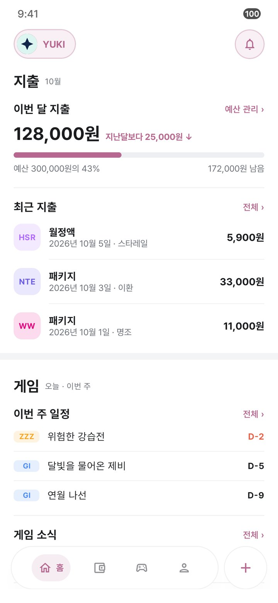
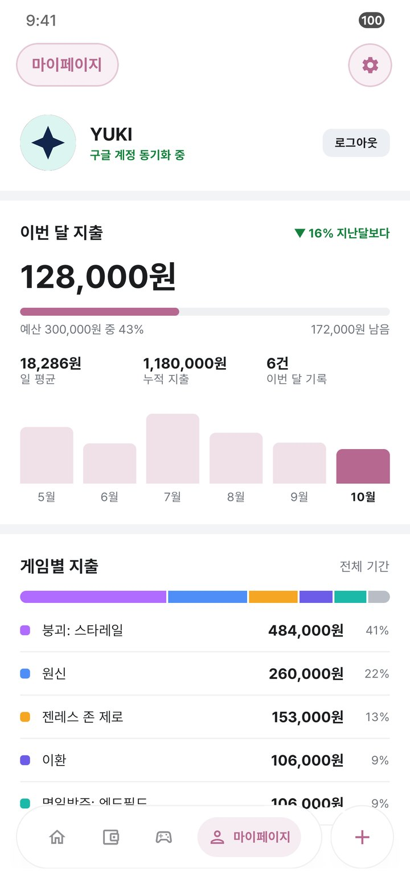
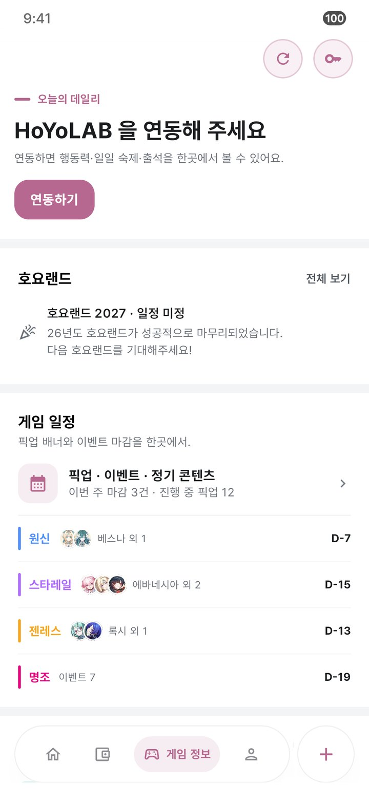

YUKI · @chbk1348
필요해서 만들고,쓰면서 고쳐요.
Google Apps Script 웹앱으로 시작한 가챠 지출 기록이 Android · iOS 네이티브 앱이 됐어요. Kotlin Multiplatform으로 두 플랫폼을 함께 만듭니다.
Gatcha Log
가챠 지출을 똑똑하게.
원신 · 붕괴: 스타레일 · 젠레스 존 제로의 지출 관리, 실시간 노트, 출석, 캐릭터, 가챠 분석을 한 앱에서 봐요. 가챠 확률표는 명조 · 명일방주: 엔드필드 · 이환까지 6개 게임을 지원합니다.

홈

지출 분석

게임 정보
실제 앱 화면이에요. 화면 속 이름과 금액은 예시 값입니다.
한 앱에서 하는 일
- 지출 관리게임 · 결제수단 · 태그별로 기록하고, 월 예산 사용률과 연간 리포트로 돌아봐요.
- 실시간 노트레진 · 개척력 · 배터리와 파견, 주간 보스를 한 화면에서 확인해요.
- 자동 출석체크매일 오전 6시에 출석하고 결과를 알림으로 알려 줘요.
- 배너 · 일정픽업 배너 D-Day와 이벤트 마감을 날짜순 타임라인으로 봐요.
- 천장 카운터 · 가챠 분석누적 천장을 세고, UIGF 기록을 가져와 평균 천장과 픽업 비율을 계산해요.
- 내 캐릭터보유 캐릭터 전체의 스탯 · 장비 · 성유물과 유물 유효 점수를 봐요.
- 호요랜드 가이드오프라인 행사의 시간표 · 굿즈 · 부스 · 푸드존과 지난 행사 기록을 담았어요.
- 클라우드 동기화Google 로그인 한 번으로 Android와 iOS의 데이터가 그대로 이어져요.
설치
스토어에 올리지 않고 GitHub 릴리즈로 배포해요.
Android Android 12 이상
릴리즈 페이지에서 Gatcha-Log-27.51.0.apk를 받아요.
설치할 때 출처를 알 수 없는 앱 허용을 물으면 허용해요.
그 뒤로는 새 버전이 나오면 앱이 알려 주고, 앱 안에서 바로 설치해요.
iPhone iOS 18 이상
PC에 Sideloadly나 AltStore를 설치해요.
릴리즈 페이지에서 Gatcha-Log-27.51.0.ipa를 받아요.
본인 Apple 계정으로 서명해 iPhone에 설치해요.
무료 Apple 계정 서명은 7일마다 다시 설치해야 하고, 데이터는 그대로 남아요.
프로젝트
-
Gatcha Log가챠 지출 · 일정 트래커Kotlin Multiplatform · Compose · SwiftUI GitHub ↗
-
다음에 만드는 것이 여기에 쌓여요.